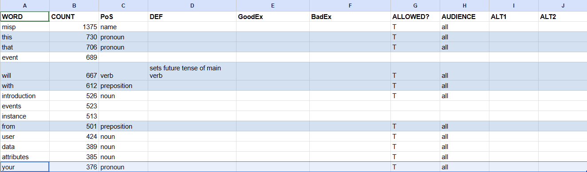

Table of Contents
The first words that you set up in your dictionary will be the easiest, but have the most impact.
Prerequisites: Have the dictionary file in a spreadsheet.
Effort: This will require less than an hour.
Procedure 1. To work through the most used words in your dictionary:
A typical result for the most used words are the names of your organization or product.
ASD-STE calls these technical names. Set the PoS of the technial names in the top results as Name.
This lets you filter for proper nouns which change more often than regular nouns. For example, the company name will change if your organization delivers a white label product.
Enter the PoS for the other most common words, such as the that this from. When you get to a word that is may be used in multiple parts of speech and is not a common word for all English content, skip it.
T (for true) or F (for false).Most of these first words will be allowed.
all or select a persona from the list, if you are sure this word will be allowed only for this persona.In our example, one of the product or company names is the word with the highest frequency. We set its PoS as Name and set Allowed to T.
We set Audience to all. We do not set a value for the other columns yet.
In the next top 20 words, we have many that are clearly to be allowed: this that will with from your. These are pronouns, prepositions, and modular verbs. In a technical writing dictionary for native speakers, it does not give a lot of information to define the PoS. Is that a pronoun, adverb, conjunction, or determiner? We set a rule that we do not use minimalist rules. If that helps make a sentence easier to understand, we use it.
We have words that are industry standard for software technical writing:
introduction
user
data
attributes
attribute
example
organisation. Later, we will enter a specific deinition for these words. For now, we set the PoS, set Allowed to T, and set Audience to all.
If you know that you will use a specific AI-driven tool, such as writer.com or jasper.ai, change the dictionary headers and values to work with the aquired tool.
See organisation. We know we need this word, but this spelling is British. We know our rules will tell us to use American spelling. In this case, we will make a decision for our dictionary without analysis, or to put it more accurately, despite analysis. The spelling of organisation is the most commonly used form, but we will not use it. We will use the American spelling.
Sort the complete range of dictionary alphabetically, by Word.
Set organization and organizations as allowed (T in Allowed).
Set the British organisation and organisations as not allowed (F in Allowed).
In the allowed words, set the definition: nonspecific body of people with a purpose.
We will use organisation for a company, nonprofit org, military base, and all similar bodies.
In ALT1 for organisation and organisations, enter organization and organizations.
Sort the range by Count. We are done with the easiest words. Next: analyze words in their syntax and by content to make decisions for the dictionary.